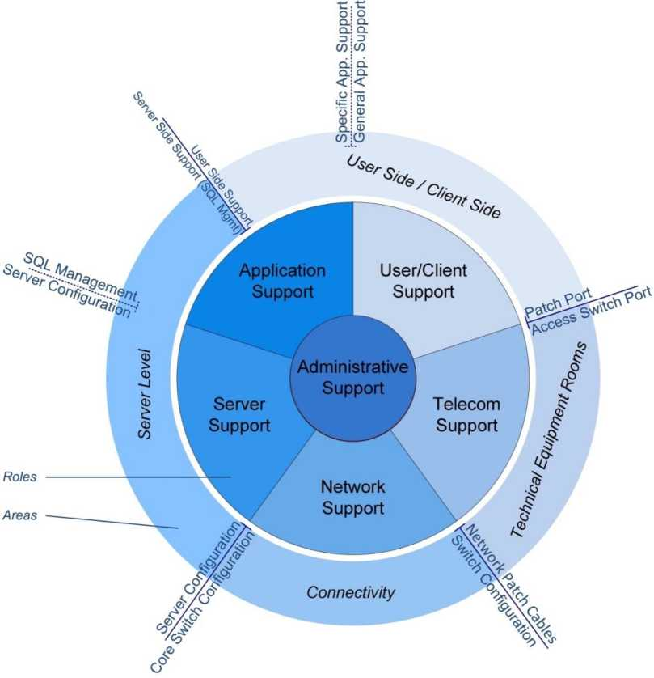

Computer Department Guidelines
Revised: June 2015
For details, see the Change Log attached to the TSL article
The purpose of this document is to provide guidelines on how to organize and operate a Computer Department in a branch office. It provides additional details beyond what is provided in Branch Organization.
Chapter Paragraphs
WHQ Computer Department Roadmaps
Communication with Headquarters
Providing Proper Oversight for Remote Volunteers
Remote Volunteers Taking the Initiative to Stay Involved
Reviewing Infrastructure Problems
Communication within the Department
Communication with Department Overseers
New Department Member Orientation
Table of Contents
Purchasing Equipment, Supplies, and Services
Checkout Equipment Pool for Laptops and Phones
Infrastructure/Fleet Upgrades...........................................................106-109
Backup and Disaster Recovery........................................................110-116
Chapter One
1. Computer Department Guidelines has been prepared to assist Computer Department (CD) overseers in carrying out computer operations. It outlines the procedures, methods, and approach that should be taken in handling computer operations at the branches. It consists of five main sections:
• Introduction and Purpose (this section)
• Role of the Computer Department
• WHQ Computer Department Policies, Procedures, and Resources
• Organization and Personnel
• Processes and Procedures
2. The three appendices contain the following:
• A table and chart detailing the technical roles and interfaces between them
• A checklist of the things a Computer Department should do or organize
• Suggested routine maintenance tasks
3. Each section of Computer Department Guidelines is assigned a number and each paragraph within each section is also numbered. Therefore, paragraphs are referred to by section and paragraph number. For example, section 1, paragraph 10, would be written as “1:10.” Periodically, as adjustments are made, this document will be updated.
4. This information complements and expands on the Computer Department-specific information that is found in Branch Organization. It contains much of the direction previously supplied in letters from headquarters. The principles contained herein apply to all branch offices although the needs of each branch will vary according to the size of the branch, the type of work assigned, and number of remote locations supervised by the branch office.
5. Computer Department Guidelines links to all relevant policies and standards in the various headquarters technical support Intranet sites.
6. Computer Department Guidelines does not cover every situation that may arise, but outlines principles that should guide the thinking of the Branch Committee (BC) and Computer Department oversight when making decisions. If you have questions regarding specific situations not covered herein and are in need of further direction, please write a memorandum to the WHQ Computer Department.
Introduction and Purpose______________________________________
7. After reviewing these guidelines you may see areas that need attention or improvement. Please do not feel that you have to implement these items all at once. Discuss the matter with your Branch Committee and after consulting with them, feel free to write to the WHQ Computer Department for direction if needed.
8. It is a privilege to work in a supportive role at Bethel to help others get their work done. While there are many policies and procedures outlined in these guidelines, above all, apply the principles of love and hospitality as well as kindness and patience. (1 Pet. 4:8, 9; Col. 3:12) Strive to give good service to your brothers.
9. At headquarters, it is our privilege to work with you in caring for this vital work to advance Kingdom interests. Our collective efforts, in all the Computer Departments, assist the Governing Body in accomplishing its work and brings praise and honor to our loving heavenly Father, Jehovah.— Ps. 106:48.
Chapter Two
1. The primary role of the Computer Department is to assist departments to make effective and appropriate use of computer technology as a tool to help accomplish all the work done at Bethel while balancing the need to make wise use of dedicated funds.
2. Appropriate use of computer and communications technology facilitates the publication of Bibles and Bible literature in hundreds of languages. Prophetically, the Bible mentioned that we would “drink the milk of nations” by using valuable resources from the nations in order to advance pure worship. (Isa 60:16, w02 7/1 p.16) The book Isaiah's Prophecy—Light for All Mankind, Volume 2, page 316 states: "For example, wise use of modern technology has made possible the translation and publication of Bibles and Bible literature in hundreds of languages. As a result, hundreds of thousands each year study the Bible with Jehovah’s Witnesses and come to know that Jehovah, through Christ, is their Savior and Repurchaser." Therefore, as a result of increased computerization, the responsibilities of the local Computer Department have increased significantly.
3. In some cases the Computer Department also assists with the computing needs of other offices. This may include remote translation offices, Shipping and Import Offices, Local Design/Construction Departments and teams, Regional Design/Construction Departments, Regional Audio/Video Centers, as well as country offices, or offices in other locations that may not have sufficient technical expertise. The WHQ Computer Department will provide direction for arrangements to assist other branches.
4. The Computer Department is responsible for the installation, operation, maintenance, and administration of the following:
• Clients: Branch-owned desktops, laptops, tablets, and smart phones (Windows, Apple, Android, Linux, etc.) that connect to the Bethel network
• Servers: The server systems that client computers connect to such as database, file and print, web, backup, etc.
• Network: Routers, switches, wireless access points, and all the associated wiring
• Printers and scanners: The configuration and management of these items
• Radios and data communication: This includes any related technologies including communication links supplied by outside vendors (working closely with Purchasing for vendor relationships and communications)
• Phones: This includes the phone systems
Role of the Computer Department______________________________
• Internet: The setup, operation, and maintenance of all Internet connection(s)
• Security: Ensuring that computer systems are secure and that only those that are authorized have access to appropriate information
• Applications: The installation and administration of standard organizational applications such as Admin and WTS and support of other approved software
• Other: In some branches, the Computer Department cares for other computer-based systems such as security cameras, building controls, fire detection, and HVAC. Or, in some of the larger branches, these may be cared for by other departments. However, in all cases the computer department will always care for the infrastructure that these devices connect to. (See Network Design and Telecom Department Organization (HPA:YA January 25, 2011, No. 198P).)
5. The Computer Department’s goal is not only to provide computer equipment and software but also to help branch members make good use of the equipment and software that have been approved and provided for translation, publishing, and administration. This includes providing technical training sessions on how to use the common standard desktop software and the telephone system.
6. The Computer Department carefully maintains the computer, network, and telephone infrastructure to keep equipment up to date and in good working order in line with WHQ standards. While some minor outages are unavoidable, proper planning and regular maintenance should be done so as to avoid prolonged outages that adversely affect the work of other departments.
7. The Computer Department must be service-oriented. Showing kindness to our fellow workers at Bethel will ensure a friendly work environment. The Watchtower of November 15, 1970, page 675, stated: “To be kind means to be truly helpful. To be kind can mean to have a disposition to sympathy and helpfulness, a sympathetic interest in others’ welfare. The word chrestos, translated “kind” in the Christian Greek Scriptures, is even more forceful, for it means “being helpful toward others.””
8. The Computer Department helps other departments to adapt their processes to standard organizational software (such as Admin). They should work with departments to understand their work with the goal of seeing how computers may assist. They should not act or make decisions unilaterally, but rather should work in close collaboration with the various departments they support. Therefore, the Computer Department should make sure that any technical solutions that will directly affect a specific
______________________________Role of the Computer Department department are always jointly presented to the Branch Committee for approval.
9. In some cases, introducing computer technology to existing work processes may complicate the work or unnecessarily require additional personnel. Computer technology and automation is not always the answer to streamlining or simplifying the work. The Watchtower of January 15, 2013, page 17, paragraph 3, contained an excellent reminder for those involved with computer technology: "We can, however, also become obsessed with computer technology. Marketers cleverly convince people that they must have the latest products." Remember that computers are just a tool to get the work done. If you have questions, please write for direction.
10. As a service-oriented department, good communication is vital with those being served. If requests are made by departments, make sure to respond in a timely fashion. If a request requires further approval, inform the requestor so that they understand that their request is pending and then make it clear when you will next update them.
11. The Computer Department can only provide assistance with personally owned computers or devices for services related to Bethel work, such as configuring Exchange ActiveSync on tablets or smartphones or the Unified Access Gateway (UAG) on personal laptops. The Computer Department does not assist during work hours with personal computer support such as installing personal software, troubleshooting problems, or repairing personal hardware. If your branch has a department that performs personal repairs on electronics devices such as televisions, radios and appliances, Bethelites could bring laptops and other small electronic devices to them for hardware repairs. The Computer Department’s focus is on Bethel work computers.
12. All local programming projects, regardless of size, must be approved by the Branch Committee and the WHQ Computer Department. (See the policy memorandum Approval for Local Programming Projects (HPA:CD December 23, 2013, No. C-24283P).)
Chapter Three
1. In order to maintain reasonable uniformity among branches, WHQ provides standards and technical direction. The Computer Department should keep up to date with such information as provided in these guidelines as well as correspondence to the branches and the various technical support intranet sites.
2. There is no need for branches to experiment with or pioneer the use of the latest technologies available; rather, they should concentrate on using what has been approved. Spending time investigating new technologies or devices can be a distraction and could result in neglecting more important branch work. The WHQ Computer Department may already be investigating the new technologies or devices you are interested in, or may have plans to do so in the future.
3. Annual technology “roadmaps” outline new technology approved for all branches. They keep all informed of the most recent direction and prevent time from being wasted on unnecessary research or testing. They also reduce the duplication of work, preventing multiple branches from testing or implementing the same technologies. Precious manpower is saved by pooling our resources and not having each branch investigate and integrate every new technology.
4. It is vital that all in the Computer Department carefully analyze the annual WHQ CD roadmap. Some may decide to consider it as a department instead of leaving it to each member to read it. In this way, questions can be discussed as a group and all can have a common understanding of this important document. Additionally, the CD overseer and his assistant may also find it advantageous to review the roadmap together after six months. This will help them to see how much progress has been made in comparison to the roadmap and where they need to focus more effort.
5. At a minimum, the CD overseer should review the roadmap with the BC contact for the Computer Department. He may decide to review certain updates with the entire Branch Committee.
6. The Global Intranet home page links to various headquarters department intranet sites. Several of these sites are maintained by the WHQ Computer Department and contain technical documents, standards, policies, and procedures described in the next points.
7. The Technical Support Library (TSL) is the main source of technical documentation, standards, and policies for the Windows and Apple infrastructure. (See the introductory memorandum.) It consists of these components:
• The TSL Knowledgebase (KB) contains policy letters and memorandums sent to the branches, technical installation and configuration documents, and procedures for everything related to a branch computer infrastructure (additional technical documentation for BSN devices and their related software, Admin, jw.org, MEPS, and WTS have their own intranet sites as noted below).
• The TSL Forums contain discussions on various technical subjects. This is not an official mechanism to request direction from headquarters, but rather a way for branches to assist other branches. Technicians may find it beneficial to browse these discussions and learn from the questions raised and solutions given. One important forum to follow is “News/Announce-ments.”
• TSL Tickets allows branch technicians to request assistance for specific technical problems that require resolution by headquarters.
• The global TSL downloads folder, contains software and training materials.
8. To keep up with new content in TSL you can subscribe to knowledgebase categories, forums, and/or tickets. At a minimum, at least one member in the department must follow each KB category (either by subscribing and receiving e-mails, or using an RSS reader) to be aware of new or revised technical documents. Following forums or tickets is optional.
9. Two policies in the TSL WHQ CD Policies knowledgebase that all computer users need to understand well are:
• Information Security and Acceptable Use of Computers: This is a list of over 90 points that cover security, data storage, and acceptable usage of Bethel computers by users and departments. Computer Department personnel should study this carefully so they can assist users to apply this direction.
• Proper Use of Communication Tools within Bethel: This policy gives direction and reminders on appropriate use of e-mail and other electronic communication tools.
10. As stated in 5:31-32 of the guidelines, new users should receive a basic orientation of computer resources and their acceptable use, security,
WHQ Computer Department Policies, Procedures, and Resources passwords, and other key points from the above documents along with the Confidentiality Affirmation.
11. Support tickets for BSN-related issues can be submitted via a designated e-mail address. (See http://bsn.core.wtbts.net/wiki/Assistance.)
12. The Admin Support Database contains downloads of Admin R15 components, user reports (bug reports and enhancement requests), hotfixes, and instructional videos explaining the use of Admin Release 15.
13. The jw.org technical documentation site explains how to set up use of the various features on jw.org by a branch. Peer-to-peer technical discussion regarding jw.org is handled in the TSL jw.org forum.
14. The Publication Processing Documentation site (PPD -http://ppd.bethel.jw.org) and the Publication Processing Forums (PPF -https://ppf.bethel.jw.org) are for MEPS and related publishing processing software. For MEPS/WTS technical support, post questions in the Publication Processing Forums.
15. Requests for large computer related expenses, training, travel, or personnel-related matters should be directed to the proper Governing Body committee. However, please copy the WHQ Computer Department on these requests.
16. Communication should always follow the guidelines established in Branch Organization. The local Computer Department should feel free to communicate with the WHQ Computer Department via e-mail, memorandum, telephone calls, video conferencing, or by submitting an official support request via one of the mechanisms described in the section on Technical Support. This helps to resolve problems quickly, clarify direction, and keep the work moving at a fast pace.
17. For contact information for different technology areas, see the TSL article World Headquarters Contact Information.
18. The WHQ Computer Department welcomes your feedback on issues that are affecting your branch or suggestions you have for improving the work. Please send your ideas to InboxCD. This may assist in identifying trends that affect other branches and solutions that may simplify the work.
19. Technical support is available from headquarters through a variety of mechanisms described in this section. If possible, please search existing support databases or intranet sites to see if someone else has already reported the problem.
20. For issues related to global Bethel Domain services, contact the Global Help Desk (available nearly 24 hours a day, 5 days a week). (See the announcement memorandum, Global Help Desk Arrangement (CD:CDA August 15, 2013).)
21. Contact instructions (e-mail, phone, Lync) are detailed on the Global Bethel Intranet Help Desk page. If for some reason the Global Help Desk does not answer and it is an emergency, after-hours contact numbers are also listed.
22. For Windows or Apple problems or problems relating to jw.org, or questions that require resolution from WHQ, please open a ticket in TSL. You can also view tickets from other branches.
23. WHQ Server Technicians are available to provide remote assistance with any server related matters such as deploying servers at a new RTO, providing new or upgraded server hardware for an existing RTO, assisting with specifying and deploying new physical or virtual servers, as well as helping with operating system upgrades and matters pertaining to storage systems.
24. For Admin, submit a user report or support request via e-mail to the Admin inbox (InboxAdmin2000WHQ@usa.wtbts.net). Please use the correct template. As a reminder, Admin enhancement requests should be approved by the Branch Committee and sent to the WHQ Computer Department as correspondence, and not to the Admin inbox.
25. For BSN support, submit a ticket by sending an e-mail to bsn-eng@core.wtbts.net. You can also view and search past BSN assistance emails from other branches.
26. For peer help from other branches (not an official way to request technical support) you can post a question in one of the TSL forums. However, this is not the correct mechanism to request direction from headquarters.
27. For MEPS/WTS technical support, post a question in one of the Publication Processing Forums.
Chapter Four
1. One member of the Branch/Country Committee serves as the committee contact for the Computer Department (in some branches or offices this contact may also be the Computer Department overseer). He presents to the Branch Committee matters involving computers, helping them to understand headquarters’ direction and policies and the reason for certain decisions. Although not directly involved in day-to-day work or technical decisions, he has the responsibility to ensure that the computer needs of the branch are being met in harmony with written direction and that adequate personnel are assigned to the Computer Department to meet these needs.
2. The Branch Committee contact needs to maintain good communication with the Computer Department overseer. Scheduling a regular meeting (at least monthly) ensures regular communication. The CD overseer can update the BC contact on progress, plans, and any issues that may need attention by the entire Branch Committee. He should be updated on extended downtime even if it is scheduled, reasons for unscheduled downtime, and any changes that may impact the work of other departments at the branch or remote offices. Others involved in department oversight may be invited as the need arises.
3. At least once a year the CD overseer should present to the Branch Committee an update on the department’s progress, plans, and personnel.
4. The Branch Committee should carefully select the Computer Department overseer and his assistant. While a technical or computer background is preferred, it is not required. The Computer Department overseer should be first and foremost a spiritual man, trustworthy, with a good grasp of technical work and concepts and the ability to understand how new technologies can be used in the branch. The overseer’s day-to-day responsibility is to promote, monitor, and organize the smooth operation of the department. This involves giving clear direction to the department and following through on tasks and projects. However, once decisions are made, with proper delegation and trust in department members, the work should be able to proceed without his involvement in every detail. If he can read and write English this can be a great help in his work. If he does not read English it may be good if the branch could assist him in learning it.
5. He should show good initiative, communicate effectively, interact well with others, and humbly seek theocratic direction from the Branch Committee or headquarters when appropriate. He should be sensitive to direction and feedback from the Branch Committee and other departments at the branch. He should be able to keep a confidence and be capable, approachable, service-minded, objective, practical, and discerning. He must be conscious of training others, able to delegate where necessary, not opinionated, or a procrastinator. He should assist others under his oversight to have this same attitude.
6. Appointing a qualified assistant overseer has two advantages: 1) having someone ready to care for oversight matters when the overseer is away and 2) identifying someone that, with training and experience, may be in a position to take over if the overseer for any reason has a change of assignment.
7. At a minimum, the assistant overseer needs to be kept up to date with all CD oversight matters. For example, he should be copied on e-mails relating to department work and personnel matters and attend the regular oversight meeting with the BC contact at all times. The assistant needs to be given the same resources, rights, and access as the overseer. This would include, amongst other things, requisition and leave approval, proxy for correspondence approval, etc. In this way he can step in when the overseer is away.
8. At the branch’s discretion, an assistant overseer can also be more than a backup. In order for him to gain experience and training he can assist the overseer in caring for some of his workload. This may involve daily administrative tasks, shepherding, visiting of other departments, correspondence, work flow monitoring and coordination, etc. This may also mean that this brother may have to relinquish some of his responsibility at a team level so that his involvement in oversight does not jeopardize the work on that team.
9. In larger branches it may be advantageous to have a full-time assistant overseer. This will help balance out the large responsibility the Computer Department carries as the team grows in size and the scope of work is widened. Care of the various teams, projects, WHQ’s work, meetings, and coordination can be shared between these two brothers, thereby making sure there is always the necessary oversight in place to keep larger branches functioning effectively with no disruption to the branch’s core responsibilities.
10. Per the letter to all Branch Committees dated HCA:CD June 3, 2015 No. C-38239C regarding Computer Department Staffing Guidelines, it is expected that one person would be assigned to the “Support” role of the Computer Department for every 30 persons working in the branch including those serving in remote translation offices and other remote offices. In larger branches it is anticipated that the ratio may improve due to the organizational structure of the Computer Department. Some branches may require more staffing due the skill of the technicians, the age or health of those in the department, the complexity of the systems, the number of technologies being supported, the number of remote offices, whether the Computer Department cares for other computer-related work for translation, audio/video, maintenance, and so forth. If it is felt that an exception may be warranted, please provide the Personnel Committee with your recommendations along with a clear explanation of the needs that have arisen in your Computer Department.
11. For the purpose of reporting and counting Computer Department personnel, they should be classified in three groups: “WHQ Computer Department Worker,” “Programming,” and “Support.”
• The “WHQ Computer Department Worker” group includes personnel in your branch that have been assigned to assist the WHQ Computer Department in worldwide projects. Two individuals who both assist part-time may be counted as one fulltime person in order to represent their contribution to headquarters work accurately.
• The “Programming” group is for full-time programmers in larger branches. Staffing for the “Programming” group should be approved by the Coordinators’ Committee on a case-by-case basis as projects are approved. It would be rare for a branch to have a group of full-time programmers.—See 2:12.
• Everyone else would be considered in the “Support” group.
12. Where possible, do not rely on just one person to handle the entire department. The Branch Committee and Computer Department overseer should be on the lookout for prospective technicians so that the department will be well-staffed. Those with greater skill and ability should be encouraged to train and delegate to others. (2 Tim. 2:2) Strive to locate and use qualified local brothers within your branch territory who are skilled and can make themselves available to assist with various aspects of the work. One way to evaluate prospective Bethelites is to invite them for temporary work or use them as remote volunteers. Do not expect other branches to be in a position to transfer people to your branch to fill local technical needs.
13. If you ask the Personnel Committee for additional assistance or training in computers, please refer to the standard Computer Department roles described in this document as a reference to identify the specific role that needs help. (See Appendix I.) This greatly helps headquarters in looking for a person that can really fill your needs rather than a memorandum simply saying: “we need a computer person.”
14. If you have a skilled person who has proved to be valuable, you will want to give serious consideration to his value to the organization should he want to marry and apply to remain at Bethel. The same is true when other assignments at the branch need to be filled. While not wanting to hold a brother back from additional responsibilities, a branch should be sure that another technically qualified person is available to keep up with his assigned responsibilities before a change is made. Therefore, if the Branch Committee decides to transfer an experienced technician to another assignment, they should already have a well-trained brother on hand to replace him. Brothers with these abilities and training are difficult to find. The stability of the computer systems could be in jeopardy if an experienced technician is hastily moved to a new assignment without a well-trained technician to take his place.
15. Try to have a backup for the key technical areas, one who handles the work from day to day and another who stays informed and can step in when the primary responsible person is away (or if his assignment changes or he has to leave Bethel unexpectedly).
16. Besides being spiritual persons, those who are assigned as technicians should have sound, logical thinking ability to troubleshoot and resolve problems when doing computer work. They should be able to read and follow technical documentation carefully. These skills may count more than specific technical experience or knowledge. Over time these ones will likely develop more advanced technical skills that will help them in working with complicated equipment and systems. It is very helpful if you can have at least some of the technicians in the Computer Department that can read English well, since most technical computer information is in English.
17. Due to the heavy workload in the Computer Department, communication within the department and between oversight and department members often revolves solely around projects and technical problems. It is therefore beneficial to arrange regular (e.g., quarterly) one-on-one meetings for each member to discuss how their work is going in general, what could be done to improve their work environment, give commendation and encouragement, etc. This could be done by the department overseer, his assistant, or delegated to team leads as circumstances dictate.
18. The workload must be scheduled in such a way that department members do not have to work excessive overtime for several months. The department overseer should carefully monitor the workload of the technicians to make sure that they are not overworked. The BC contact should also be aware if department members are regularly or routinely required to work overtime to complete assigned work, especially if this requires missing meetings or other theocratic assignments. This may indicate that the department is understaffed, additional training is needed, or more is expected of the local Computer Department than they can reasonably handle. It is wise for department members to check with oversight before deciding that they must work overtime, possibly missing meetings. The overseer may decide it is not necessary after all by adjusting priorities, permitting a delay in completing a planned task, or adding additional resources.
19. Necessary maintenance should not be sacrificed for project work as it will cause longer-term problems.
20. Just as some Bethel assignments require different schedules (such as those that work in the kitchen or infirmary), at times work in the Computer Department may also require an adjusted work schedule. This might include scheduled maintenance work that must be done after hours or working with headquarters or other branches in different time zones. Therefore, 8 hour shift work can be scheduled if necessary. If nighttime or weekend work is required please ensure that the brothers get sufficient rest for this shift work. Of course, occasional overtime work due to necessary additional work does not get compensated. The Branch Committee and CD overseer need to use their good judgment in handling when work is shift work and when it is overtime work. Even in cases where it is overtime work there may be a need to give the brothers some time the next day to recover from late night work for example. If you have questions along these lines, please consult with the WHQ Computer Department for practical assistance.
21. At times, individuals may have a split assignment in which they perform both computer work and another aspect of work at the branch. In these situations, care needs to be taken so that the brother’s responsibilities to the Computer Department are not neglected.
22. Departments benefit by identifying a department computer contact (sometimes called a key user). This is more than just someone to keep contact with the Computer Department. Rather, it is a knowledgeable member of the department who understands their processes, workflow, and tools. He can assist other users when they have questions about computer applications unique to the department. (Support for standard desktop applications should go directly to the Help Desk.) He can also give user training on department-specific applications or request such training from the Computer Department. He may recommend adjustments to electronic processes or identify trends that could be brought to the attention of the Computer Department.
23. Individuals who may provide such local computer support and training should not be listed in Admin as Computer Department personnel.
The work of a department computer contact is in addition to his normal assignment in the department (meaning this is not a primary assignment).
24. This computer contact should be kept informed of changes to the computer infrastructure and the impact it may have on the work in the department. The computer contacts can in turn communicate with their oversight as well as the users in their department.
25. The work in the department is organized around primary roles that are based on the different kind of work done by the Computer Department and the expertise needed to accomplish that work. The amount of work in a branch for each of these roles and how the people are organized to accomplish the work will depend on local circumstances, such as available personnel, skill levels, and the workload. For example, in some branches these roles may be organized as separate teams. Other branches may combine one or more roles to form teams. And in smaller branches one brother may handle more than one role. In the future, some of the work outlined in these technical roles may be cared for by WHQ support technicians.
26. The primary roles in the Computer Department are:
• Application Support: This technical role cares for software installation, configuration, and upgrades of Admin as well as specialized applications used by departments. (Support for standard desktop and mobile applications is handled by User/Client Support.) While all branches will have person(s) assigned to Admin support, the kind of work done at the branch (e.g., Translation, Printery, Audio/Video, Regional and/or Local Design/Construction) will dictate additional application support areas that the Computer Department must care for. In all cases, the department computer contacts in their respective departments are responsible for first level support and training for department-specific applications. While the support of these programs will primarily be cared for by the computer contacts, there may be a need for the Computer Department to provide some technical assistance and/or help apply technical policies and standards imposed by these applications. Two specific application areas, Admin and Translation, have additional guidelines described below.
• Admin Support: Because of the broad use of Admin, all branches have person(s) dedicated to the installation, configuration, support, and user training of Admin. They work closely with departments to help them utilize Admin to accomplish their work. This may involve providing training on Admin modules and new features as well as consulting with a department on how to apply Admin features. For example, the Computer Department should provide Admin release notes to departments and assist each department to understand changes to the software. In larger branches, department computer contacts or other key users in each department should become the experts on how their department uses Admin. It is beneficial when Admin user training can be provided by such department experts. The Computer Department should also maintain a test copy of the branch's Admin system. Typically this will be a copy of the production system. User security must be carefully administered in the test system, just as it is in the production system. Department users should be granted access. The test copy can be used for testing approved local customizations and extensions, testing new releases, planning the implementation of new features, and training users.
• Translation Support (translation branches only): The person in the Computer Department providing support for the Translation Department performs server-side installations and configuration, and helps ensure that the appropriate file server permissions are applied. He also ensures that the computer needs of the Translation Department are properly cared for by the Computer Department. Therefore, this person cares for computer-related tasks and projects that require coordination. He should have good organizational skills, be service minded and personable in dealing with others, have excellent follow-through, and should be very familiar with the various teams in the Computer Department so that he can coordinate the work effectively. The Computer Department person providing support for the Translation Department works closely with that department’s Computer Support person. As defined in Translation Staffing Guidelines, each permanent language team has its own Computer Support person that “is part of the Translation Department and has thorough knowledge of all the computer programs used therein in order to provide assistance and training on their use. In remote translation offices, the Translation Department Computer Support person also assists in maintaining the computer equipment in harmony with the guidelines and standards provided by the Computer Department.” Therefore, this person should be granted the necessary delegated rights to perform his activities and responsibilities. More information about the responsibilities of the Translation Department Computer Support person, also called Translation Computer Support, can be found on the Translation Computer Support site on PPD.
• User/Client Support: Installs, configures, and maintains all branch owned and managed client devices (computers, laptops, tablets, smartphones, desktop UPS’s) connected to the branch’s network (Windows and Apple). Provides end-user support and training for branch owned computers and telephones. Depending on the size of the branch, there may be a dedicated Help Desk to receive calls and e-mails. Some end-user problems may require the support from one of the other roles below or even a headquarters department. Good communication between all affected parties will ensure that problems will be properly handled.
• Server Support: Installs, configures, and maintains all serverside components that provide some sort of service to end-users, such as file, print, database, web, application, and communication servers. These services depend on the network layer which is handled by the Network Support role.
• Network Support: Installs, configures, and maintains the active network components including routers, switches, BSN devices, and external network connections such as Internet - anything related to network connectivity. They are responsible for what connects clients and servers to the physical network. These services depend on the physical infrastructure layer, which is handled by the Telecom role.
• Telecom Support: Installs and maintains the physical installation of the network components, including cabling, fiber, switches, server UPS’s, and cares for the technical equipment rooms and legacy (POTS/PBX) phone systems (if any). Branches may decide whether the installation of cabling should be handled by the Maintenance Department or the Computer Department based upon local circumstances. In any case, cable specifications, requirements, and overall cable plant design responsibility would be handled by the local Computer Department. (See Network Design and Telecom Department Organization (HPA:YA January 25, 2011, No. 198P).)
• Administrative Support: Handles non-technical, administrative tasks necessary for the smooth operation of the department. For example: keeping department areas organized, keeping track of hardware fleet and software license allocation, warranties, and preparation and tracking of Nonliterature Branch Requests and requisitions, assisting Accounting with understanding breakdown of invoices from telephone and Internet providers (ensuring that companies are not charging for services not ordered or no longer needed), etc.
27. See Appendix I for a table that details what each of these roles involve and what resources are available.
28. Each Computer Department should have a telephone number and an e-mail inbox for users to report work-related computer problems.
29. When a user reports a problem to the Help Desk, it is important that the Help Desk communicate clearly and kindly when the user can expect a follow-up and who will follow the problem to its resolution. If the Help Desk assigns the problem to another technician, the newly assigned brother should contact the user to let them know he will be working on the issue and when to expect an update. If it will take longer than expected to resolve the problem, it is courteous to contact the user to update him on the status and when they can expect the next update. And when a problem is resolved, the technician should communicate with the user to make sure that the user is satisfied with the resolution and to not simply assume the issue is closed.
30. It may be beneficial to assign specific technicians as a first point of contact for users with specialized needs, complex setups, multiple devices, and/or who travel regularly. In this way, instead of a different technician handling their support requests, someone can respond who already knows them and their work environment, setup, and needs.
31. In larger branches, emergency computer support should be available 24 hours a day, 7 days a week for work-related computer or network issues. This is not for personal computer support. If possible, this duty should be rotated among qualified members of the department so that individual members share the load. This additional duty should be taken into account when assigning other Bethel duties so as not to overload Computer Department members.
32. For larger, more complex infrastructures, two levels of emergency support may be advisable - a rotating daily duty to handle the after-hours calls and a weekly or monthly second level emergency duty to handle more complex infrastructure problems (such as with servers or the network).
33. In case of an emergency (either due to power issues or phone system software or hardware problems) the emergency computer support duty should have a branch mobile phone. This number should be published according to local arrangements. Some only publish it to those responsible for security and oversight during non-working hours. Others may publish it in printed phone directories. This permits reporting computer infrastructure problems when the internal phone system is down.
34. As stated in the jw.org Technical Documentation intranet site under the topic “Help Desk,” the jw.org Help Desk is responsible for “assisting Web site users with the general use of the jw.org Web site, problems relating to the user's Web browser, and with technical questions related to the functionality of both the public and private portions of the site. This function may be performed by the Computer Department Help Desk, or can be assigned separately. The Help Desk does not get involved with questions related to data entered by a congregation. These calls may be routed to other departments, such as Shipping, Service, or Accounting. If there is a technical problem that the Help Desk cannot resolve, they can request assistance from the WHQ Computer Department (for the private part of the site) or Web Publishing (for the public part). Once the switchboard operator determines it is a computer-related call, the call should be routed to the Help Desk. The switchboard operator should not determine where a computer-related call should be routed to. This should be handled by the Help Desk.
35. The organization greatly appreciates the fine contribution of all remote volunteers. Therefore, overseers need to make sure to show proper appreciation and personal attention. Doing this will keep the remote volunteers motivated, involved, and productive. Remote volunteers face special challenges that require extra effort and attention to overcome. The following guidelines for overseers and team leads will help remote volunteers be successful and happy in their assignment:
• Contact each remote volunteer regularly. Show personal interest in their spiritual and physical welfare. (Prov. 27:23) It is easier to show such attention to those physically located at the branch. In this setting, short interactions throughout the workweek with those you oversee happen naturally. You may have informal chats, eat lunch together, or get together after work for hospitality. One article on telecommuting said, “Normally informal short feedback during ‘hallway interactions’ should be replaced by planned and emphasized feedback to remote workers to keep them feeling engaged and valuable.” Tone can be difficult to convey over e-mail, which can easily lead to misunderstandings. Therefore, make sure you have regular face-to-face communication. One way to ensure this is to schedule a recurring one-on-one meeting to discuss how things are going. This shows the remote volunteer your commitment to keep in touch and provides an avenue to talk about matters not directly related to the details of their projects.
• Make sure they are not burning out by trying to do work beyond what is expected of them. Provide assistance if needed.
• Make sure they remain fully integrated with their team, whether that team is at Bethel or entirely in the field. The team lead should make sure that the remote volunteer attends and participates in all regularly scheduled team meetings. He should also ensure that the remote volunteer is regularly communicating with the members of his team. (Rom. 1:11, 12) Team leads, whether at Bethel or serving remotely, should reach out to the remote volunteers on their team to ensure their assignment is clear and that they have necessary resources.
• Ensure that each remote volunteer has plenty of meaningful work. Provide clear guidelines, goals, and due dates where possible to encourage a spirit of productivity and urgency.— 1 Cor. 15:58.
• The results of his efforts should be evident to his oversight and his fellow workers. In this regard, it would be advantageous to allow him to share details about his work at team meetings. This will serve as recognition of his accomplishments and his value to the team.—Luke 19:16, 17.
• Regularly express appreciation for their fine contribution to the work. The work done by these remote volunteers often frees up others in the department so that they can focus on additional projects. Their assistance is greatly appreciated.— 1 Thess. 5:11.
• Share the following section with remote volunteers on your team. You may suggest they read it directly from the Computer Department Guidelines. The remote volunteer can benefit by reading the entire Computer Department Guidelines. This will provide them with an overall understanding of the role of the Computer Department at a branch.
36. Working remotely presents special challenges. For example, when working physically at the branch it is easy to walk over to the office of your overseer, team lead, or other team member to ask a quick question or brainstorm about a technical problem. Therefore, it is important for you to do your part to maintain good communication. Every possible effort should be made to regularly reach out so that you remain visible and involved. Here are some guidelines that will help you stay integrated with your team:
• Regularly reach out to your oversight and teammates. Fully utilize the various collaboration and communication tools to remain visible to others. If in doubt, it is better to over-communicate when working remotely.—Prov. 22:29.
• Respond to e-mails quickly. Be prompt in handling new task assignments. This will build trust and show others that you are able to handle work even though you are working remotely.— Phil. 2:22.
• Be proactive and ask for more work if you do not have enough. This will allow you to fully utilize the time you have agreed to dedicate to Bethel work. Display a willing spirit and make yourself available to others. (Isa. 6:8) This will help others to feel comfortable seeking your assistance.
• Work in a location and environment that is conducive to remaining focused on your assignment. For example, playing music or watching television while working is not appropriate.
• When involved in video conferences, your dress and grooming should be as if you were visiting or working at Bethel. Even when not in a video conference, the way you dress affects how you feel about the work you are doing. Therefore, dress in a dignified way.
• Just as you schedule time for the ministry, it is best to stick to a regular schedule for your Bethel work. This allows your oversight and teammates to rely on your being available at work. At times, circumstances may arise that require scheduling adjustments. (Eph. 5:16) For suggestions, see the article “How to Invest Your Time Wisely” in the February 2014 issue of Awake!
• Bethel work is not a substitute for the preaching work. If you are serving as a regular pioneer, you may receive hour credits each month for the time you spend as remote volunteers. Nevertheless, make sure you continue to have a regular and balanced share in the field ministry.—2 Tim.4:5.
• Continue to be exemplary in caring for your family responsibilities. Your family’s spiritual, emotional, and physical needs are of prime importance.—1 Tim. 5:8.
• Above all, maintain a high level of spirituality. This will keep you in tune with the sacred nature of your work.—2 Tim. 2:15.
Chapter Five
1. Appendix II contains a checklist of key points a Computer Department should have well organized. The department overseer should make sure that each item is cared for as appropriate to the branch’s needs.
2. As stated in the introduction, in going through the guidelines and the checklist you may see areas that need attention or improvement. Please do not feel that you have to implement all of the things listed all at once. Discuss it with your Branch Committee first, and after consultation with them feel free to write to the WHQ Computer Department for direction if needed.
3. Daily infrastructure health checks can help discover problems before users do. In the future, we would like to automate some of this monitoring. In the meantime, it is recommended that a basic check of all vital services (network, Internet, file server, intranet, Admin, etc.) be performed at the start of work and before work ends. (See this TSL forum post for suggestions.)
4. The Computer Department needs a well-defined procedure for requests for hardware, software, and user access rights. How this is done is up to the branch. Some use a template document that is filed out. Others use the Admin Requisitions module. The important part is to have a defined approval process. Approval should start with the requesting department overseer, then be reviewed and approved by the Computer Department overseer (to make sure the request is in harmony with the WHQ Computer Department standards and direction), and then sent to the BC contact for him to handle approval with the Branch Committee according to their local procedures.
5. It is important to track technical problems reported by users or discovered within the department. This helps ensure problems get resolved. How this is done is up to the Computer Department. While there is no need to track every problem solved, it is useful to record solutions to problems that may arise again. Straightforward requests may not need to be tracked. However, any such tracking system should not add significant time to the work to handle support requests. The important thing is to have a system that clearly indicates which problems are not resolved.
6. The Computer Department should carefully keep track of past and future planned changes to the infrastructure. For example, hardware and software upgrades, installations, replacements, changes to settings or configurations or group policy, switches, routers, BSN devices, servers, Admin, file permissions, etc. should be documented, reviewed, and planned in advance. This ensures changes are well thought out and may help to identify unexpected dependencies or interactions that could cause infrastructure problems. For example, a request for change could be documented and reviewed regularly by the overseer and team leads before being implemented. Or a simple infrastructure change log document could be maintained.
7. Experience has shown that when infrastructure problems seem to be getting out of hand, start with implementing a well-defined change management process (see previous point) to get a clear idea of what the root cause of problems are and what changes might have caused unexpected problems. Infrastructure changes can be categorized broadly as high confidence or low confidence, where the confidence level reflects oversight’s view of the risk of producing unexpected infrastructure side effects as a result of the work. Even changes that do not require a service notification should be logged as they later may be the cause of future problems.
8. These basic steps should be taken for all such changes (whether they be high confidence or low confidence changes):
• Planning: This is the most important. Write a detailed description of the steps to implement the change. Review this as a team - others may find errors or suggest improvements. Proverbs 11:14 states: “When there is no skillful direction, the people fall, but there is success through many advisers.”
• Validation: Define a series of tests to ensure the change had the desired effect and that it has not adversely affected other areas of the infrastructure.
• Roll back procedure: Before a change is made, determine the steps necessary to undo or roll back the change if for some reason the change causes unexpected problems or for any reason is not able to be implemented successfully.
• Test: If possible, test the change in a lab environment instead of trying it for the first time on the production infrastructure.
9. All of these steps should be taken before a change is actually implemented. Luke 14:28 states: “Who of you wanting to build a tower does not first sit down and calculate the expense to see if he has enough to complete it?” While this level of planning may seem to slow down the work, the more planning and testing before a change is made means a reduced risk of unexpected impact on others’ work.
10. Even with the best planning, problems occur. All infrastructure outages and failures should be logged in a simple spreadsheet or document noting the date, time, description, component, and root cause. Conducting a post mortem review of failures or problems in the infrastructure with the goal of identifying the root cause (whether they are human or equipment) helps to prevent similar problems in the future. The purpose is not to assign blame, but rather to improve processes or identify training needs.
11. For example, at WHQ, every network and server outage is logged and the root cause listed. Every month the log is reviewed by CD oversight. Questions are asked such as: “What was the root cause?” “Has this happened before?” “What needs to be done to keep this from happening again?” “Why did the user know about this failure before CD did?” “Why was an equipment or software failure not handled by redundancy?” “Did a technician not follow department work processes or standards?”
12. Although taking the time to do this analysis may be time consuming, it helps all in the department to learn and make improvements.
13. Experience has shown that at times, efforts are spent fixing problems in higher layers of the infrastructure when the basic foundation was not well constructed. Or, equipment upgrades may be proposed to improve performance when the root of the problem is lower in the stack. This is like fixing a hole in the roof or repainting a wall in a house when the foundation is crumbling.
14. For example, before spending excessive time in diagnosing network performance problems on a desktop or server, make sure the basic network foundation layer is implemented and working properly: Are fiber connections up to standard? Are the network cables themselves of good quality and in good repair? Are switches up to date and configured properly?
15. If you find the Computer Department is in a continuous "firefighting" mode, start at the bottom of the stack and work your way up to make sure the computer infrastructure is up to Bethel standards.
16. It is important to maintain good communication within the department so all have a basic idea of the work going on and where they fit in to overall department objectives. This can be done by holding regular department meetings (according to local needs, weekly, biweekly, or monthly, depending on the size of the department, the amount of projects, changes, etc.) where important information can be communicated by the overseer and reports on progress can be given.
17. Starting such meetings with a brief scriptural point that applies to the work at hand or challenges being faced can be upbuilding for all. The overseer may choose to assign other elders in the department from time to time to handle this point.
18. Establishing and maintaining good lines of communication with department overseers will make the work flow smoothly. The CD overseer should take the initiative to have regular communication with other department overseers to review pending projects and tasks, discuss how the Computer Department could better serve their needs, and review upcoming infrastructure changes and maintenance. This is often best done in person. The June 2008 Awake! “Watching the World” quotes one individual who said, “Technology is enabling us to opt out of difficult situations and causing people to become more insular. People . . . e-mail or text one another rather than talk.” If your Branch Committee approves, hold a meeting at least annually with all department overseers to update them on the Computer Department’s progress and plans.
19. The Maintenance Department plays a crucial role in the reliable operation of the Bethel computer network. As such, good collaboration must exist between the Maintenance and Computer departments. Periodic meetings, perhaps quarterly, may be held to facilitate good communication. At these meetings, such things as the deployment of remote translation offices, new projects, electrical outages, and other pertinent items could be discussed. It may be necessary to determine a practical maintenance schedule. This will prevent the need for unscheduled down-time.
20. At times it may be beneficial to communicate by e-mail or by live presentations to all computer users at the branch, such as when a new technology or standard application is released (e.g., Lync 2013) or major changes to the infrastructure are planned (e.g., migration to the Bethel Domain). On these occasions, general reminders can be given such as appropriate use of e-mail and other communication mechanisms, security, proper use of Bethel computer resources, etc.
21. As the Awake! December 2012 page 4 reminds us: "Many people do not take the time to proofread what they put in writing. As a result, letters and e-mails go out to the wrong recipients or contain numerous grammatical and typographical errors". Make sure e-mail messages maintain a friendly tone and convey a service-oriented attitude.—Col. 4:6.
22. It is easy for users to get frustrated with computer technology. However, patience will go a long way to help.
23. All users should be informed in advance of down time due to maintenance or upgrades. In the case of planned downtime, one week notice should be given. The notification should be specific and explain what work is being done, why the work is necessary, what changes or improvements will result, the impact (which services will be down and for how long, who will be affected), etc. For unplanned or emergency outages, if possible send an e-mail to all users. Please inform the Global Help Desk if you have planned downtime that lasts more than 8 hours or any significant work or changes to the network infrastructure.
24. The complexity of the technology in use today makes it very important that sufficient time is dedicated to ongoing training. This includes understanding the approved, standard desktop and server products currently being used. It is imperative that the technicians learn to properly maintain the local production systems so that the day-to-day operations function smoothly and are not adversely impacted. This involves reading technical documentation provided by WHQ as well as doing research on the Internet and perhaps setting up a small equipment lab for testing.
25. More experienced Computer Department technicians should take the necessary time to train less experienced ones.
26. Continuing education and progressive training is also important for experienced technicians. It is important to keep pace with new technologies being released and recommended by the WHQ Computer Department. However, a balance should be maintained between caring for day-today work, projects, and training.
27. The Computer Department overseer should ensure that each member of the department has a well-defined training plan that details what topics should be learned to better accomplish his current assignment and topics to learn that may assist in future assignments.
28. At a minimum, we suggest each technician dedicate at least one hour per week (during working hours) to technical training - either by team or on an individual level. Even though there is much work to do, spending this minimal amount of time will not impact production and support. More time may be dedicated for newer members or newly approved technologies. Time spent on training should be viewed as an investment and will make a person more proficient in getting his work done.
29. Use the resources included in and referred to by our internal technical support intranet sites (TSL and BSN). If you find training resources that would benefit other branches, please inform the WHQ Computer Department.
30. It is also necessary to train backup personnel for each major technology area. This will ensure that there will be less of an impact on your branch if one of your key computer technicians is absent or even departs.
31. Each new member of the Computer Department should receive an orientation covering such topics as department structure, department meeting schedule, information and physical security, important folder and intranet locations, internal tools used, location of supplies, training resources, Bethel computer infrastructure and standards, any branch local policies and procedures, etc. Make sure new members read the latest roadmap and watch the most recent video recording of the WHQ Computer Department meeting (posted in TSL).
32. Some branches maintain a simple document that lists the key things new CD members need to know. Ask that new members review this document a few weeks after they start their assignment to see if it could be improved, such as by adding any information that they had to discover on their own that would have been helpful to know. In this way, the document will stay up to date and useful for the next new department member.
33. New users should receive a basic orientation of computer resources and their acceptable use, security, passwords, and other key points from the Information Security and Acceptable Use of Computers policy. This can be handled by the Computer Department or the department computer contact (under the direction of the Computer Department).
34. The Computer Department is responsible to see that users receive training on standard Bethel desktop software (such as Windows and Office). This may be done in a classroom environment or in some cases one-on-one, such as for Branch Committee members or other key users. This can be done by the Computer Department or the department computer contact.
35. Most branches will have some features of jw.org Web sites that they support for the field. In many cases, the local Computer Department will care for the initial setup of the feature. However, the general maintenance of the feature, posting of documents, and so forth, should be handled by the department which is responsible for that information. For example,
letters to the congregations should be posted by the local Service Department. The Computer Department may have to provide the Service Department with initial training on how to use these features, but the Service Department would be responsible for incorporating the posting of documents into their internal workflow.
36. Branches must use standard, approved software. Requests to purchase and install or use portable versions of other software must be approved in writing by the WHQ Computer Department.
37. Standard approved software for Windows systems is generally made available by means of the global Bethel System Center Configuration Manager (SCCM) infrastructure. This ensures proper updating of installed software. A list of available, approved software is found in TSL.
38. Where a local need is not addressed by a standard software package, such as Admin, jw.org, MEPS, or WTS, it is best in most cases to request an enhancement to the existing software. In this way, other branches with the same needs may benefit.
39. All local programming projects, regardless of size, must be approved by the Branch Committee and the WHQ Computer Department. The WHQ Computer Department will consult with other world headquarters departments and seek approval from the appropriate Governing Body committee as needed. This approval process also applies to adding new features to existing local programs. (See the letter to all branches, Approval for Local Programming Projects, HPA:CD December 23, 2013, No. C-24283P.)
40. A local programming project includes Admin customizations and extensions (except as noted below). It also includes local Intranet development, as well as programming for telephone systems. Most department needs are fulfilled by making use of standard applications. Using the advanced capabilities of the Microsoft Office products such as spreadsheet templates or macros is not considered a local programming project. Sometimes, however, Microsoft Office macros can become complex enough to be considered local programming. When a macro is used by multiple users or involves many hours or days of development, it may fit the definition of local programming. When in doubt, please write to the WHQ Computer Department for direction.
41. With respect to Admin, branches may make only the following customizations without additional approval:
• Changes to report layouts (e.g. label formatting)
• Adding advanced search queries
• Modifying procedures specifically referenced in the Admin Help file for local adjustments (such as bank statement imports, EFT file generation, and address standardization routines)
42. When writing to request approval for local programming, describe the need and the expected benefits. Describe the proposed solution and the programming tools and methods that will be used. Estimate the work effort required in the number of man-hours, including creation of user and technical documentation. Smaller projects need less explanation than larger projects.
43. Brothers and sisters who work on software projects for the organization should seek to protect the organization’s interests ahead of their own. They need to make sure that any personal, secular, or open source software development that they do does not conflict with their obligations to the organization.
44. Any personal software development done by members of the religious order with the intent to earn income must be done without violating the vow of obedience and poverty (the Vow). The development, updating and marketing of such software must be done using personal time away. If a person creates software using personal time away, and then earns income in a passive way, such as by generating sales in an app store, this is not a violation of the Vow.
45. All who work on software projects for the organization must respect the rights of the organization. No one is permitted to use the organization’s software products or source code, data, files or images for any personal use. This includes closely observing the Terms of Use on jw.org.
46. If a person desires to develop personal software based upon or related to their work for the organization, they should disclose this to their oversight. This will allow the organization to decide whether the work should be a project done by the organization, and whether there is a potential conflict of interest.
47. If in the past, a person has worked on a personal, secular, or open source project that is related to work that they are now doing on behalf of the organization, they should disclose this to their oversight, including any copyrights, patents or legal agreements that may affect the rights of the organization.
48. The following key points are taken from the memorandum to all branches, Software Licensing Compliance (CD:CDB March 28, 2014). chapter 5
49. It has long been our policy to comply with software licensing. Branch Organization, chapter 5, paragraph 48 states: “Records have to be kept to show clearly all available licenses at the branch and who is using them. Discrepancies must be resolved either by removing the program or by obtaining a proper license. No software should be installed on any branch equipment without prior approval from the Computer Department.”
50. One reason for this is to be in harmony with Caesar’s law. When software is purchased, we are only purchasing the right to use software. We are not purchasing ownership of the software. Thus, Caesar’s law obligates us to use software in harmony with the licensing rules stipulated by the manufacturer.
51. A second reason is that failure to comply with the licensing could make the local branch office and in turn, the organization, legally liable. Some branches have been audited by commercial software companies to ensure that use of software is in harmony with their policies. Unfortunately, it has been noted that some branches do not care for software licensing until they are approached by outside auditors. There could also be heavy fines and public reproach if after an audit we faced severe penalties due to negligence in software licensing.
52. It is important that the Computer Department works closely with local departments to help them understand how software can and cannot be used within a branch environment. They should be familiar with the licensing agreements for the software used at their branch.
53. Proper software licensing involves tracking all commercial software licenses whether these have been donated or purchased, verifying that software is used within the guidelines stipulated by the company, and keeping track of what software is installed on branch computer equipment. Licenses should also be managed and records maintained for all installed software. This information should be kept up to date on a regular basis.
54. In order to comply with the above, branch records should include the following details about each license:
• License name
• Edition and version
• Full or upgrade license
• Commercial/educational/volume license/retail/freeware
• Standalone or network
• Perpetual or renewable
• Expiry date (if applicable)
• Per-user or per-device
• Serial number(s)
• License key(s)
• Activation key(s)
• Activation login details/e-mail address
• Which computer has the software installed
• Which computer or user is assigned the license?
• Media download or CD location
• Operating system license product key and version
• Purchase date
• Invoice number
• Track and update changes of computer assignments and licensed users
55. The Computer Department is also responsible for keeping accurate records of software purchased locally. These are just as important as licenses purchased through global arrangements. Before purchasing software locally, you should confirm that the organization is able to accept the licensing agreement of that software. Branches are required to comply with the licensing agreements of software purchased locally. This applies to purchased software as well as software that is free or offered at no cost.
56. For information as to what constitutes proof of license for Microsoft software please see the FAQ posted in TSL. For information on requesting licenses for Microsoft and Adobe software, see Branch Licensing Request (BLR) for Microsoft and Adobe Software (CD:CDB June 27, 2013). For information on accessing Microsoft and Adobe installation media see Branch Software Distribution (CD:CDB August 15, 2013). As stated in Software Licensing Compliance (CD:CDB March 28, 2014), referred to above, additional licensing documentation will be posted on the TSL. It will include licensing updates for common software used in all branch offices, articles on how to improve license tracking locally, and information on tools and their best usage to manage software licenses. Please refer to the TSL Licensing Knowledgebase for more information.
57. Any questions or issues concerning licensing can be addressed to the WHQ Computer Department.
58. Software installation of standard software packages is done via the global Bethel System Center Configuration Manager (SCCM) infrastructure. When needing to install any piece of software, first check whether the installation package is available from the list in TSL.
59. For software packages not available on SCCM, there is a Branch Software Distribution (BSD) folder available.
60. If a software package is not available from SCCM or BSD, please do not install the packages directly. Instead, after review and approval from both the department overseer requesting the application and the local Computer Department, request via a TSL ticket for a package to be created and deployed to your branch. In the ticket request, please explain what the need is, what the application does, and why existing software does not fill the need. Include any licensing costs or restrictions also (even some freeware cannot be used in an organization like Bethel). If approved, a package can be created and deployed.
61. Branches should request standard computer components (HP is the official standard for desktops and servers) on a quarterly basis. This enables headquarters to synchronize equipment purchases along with those of other branches to obtain better savings for the organization. (See Standardizing Computer Hardware and Quarterly Purchases (CD:CDB December 25, 2013).)
62. Any purchase of new computer hardware or software that goes beyond normal supplies (e.g., printer cartridges, memory sticks, and other small items) needs approval from world headquarters. This includes replacements for equipment that is taken out of service because of failure or because an upgrade is needed. Approval is obtained by submitting a Nonliterature Branch Request (AB-3).
63. Reasonableness should be taken into account regarding purchase decisions for nonstandard peripherals such as wireless keyboards or mice or other peripherals for computers or laptops. The standard is wired keyboards and mice. However, if a user has a need for ergonomic reasons and the cost and related support is relatively low (e.g., not requiring specialized software to be installed), an exception can be approved by the Branch Committee.
64. At times equipment is time-sensitive and needs to be expedited in order to meet certain schedules. In these instances equipment can be purchased either locally or requested through a branch’s primary purchasing branch on approval of a Nonliterature Branch Request.
65. In planning, identify anticipated needs for desktops (and associated hardware such as monitors or UPS’s), servers, storage, and so forth during the next 12 months. Narrow down the projects to the quarter in which the work needs to start. Factor in variables such as estimated delivery, shipping times, delays in customs, and then request the equipment with this schedule in mind.
66. To avoid having to replace hardware earlier than its planned lifecycle, when planning purchases, take into account the scalability of the equipment over its lifetime. (e.g., usage of RAM, disk space, CPU, etc.)
67. For a list of recommended equipment, consult the Technical Support Library equipment lists (such as the Desktop Equipment List, Network Equipment List, Printer Equipment List, and Audio Equipment List). This equipment is recommended and supported by the WHQ Computer Department. Using the recommended products, especially for the network and servers, will simplify the support. Also, it expedites the review process when a Nonliterature Branch Request (NLBR) is submitted. For major upgrades, it is best to write to the WHQ Computer Department with a detailed explanation of your proposal prior to submitting your NLBR.
68. Branch owned laptops may be provided to Branch Committee members and others that require it for their work assignment, such as those that travel regularly or have no fixed office or work location within the branch.
69. Certain departments such as Translation and Audio/Video may have specific hardware requirements and standards for computer hardware. These should be followed when planning and making purchases.
70. Close cooperation and communication between the Computer Department and Purchasing Department is needed in order to make good decisions about whether to repair or replace items. Your Purchasing Department can always consult your Primary Purchasing Branch for advice. If you have questions, you should contact the WHQ Computer Department.
71. For items not found on the TSL equipment lists, use the Global Purchasing Department's Supplier Arrangement for software and hardware that are available via jw.org when submitting a Nonliterature Branch Request. This has resulted in considerable savings for the organization.
72. Commercial software should be purchased according to the guidelines outlined by the Global Purchasing Department. For example, Microsoft software should be purchased using the BLR arrangement from Britain due to the significant savings. (See Software Licensing section in TSL for more information.)
73. Care should be taken in purchasing equipment that is not listed in TSL. While we do not need to purchase the latest and greatest equipment, we should not purchase low end or consumer grade equipment for production computer systems. These items often have hidden deficiencies that result in inferior quality, excessive waste, shorter life span, costly breakdowns, or limited manufacturer support which could prove to be more costly in the grand scheme of things. Or they do not meet the organization’s security and policy requirements (such as TPM for managed laptops). It is recommended to avoid any purchase of computer equipment from the grey market that may contain lower quality components. Balance and good judgment is needed to make the best use of donated funds.
74. Branches should seek approval from the Coordinators’ Committee before disposing of equipment in good working condition that may be of use to other branches. Where possible, computer equipment taken out of service should be sold locally. (See paragraph #81 from the Purchasing Guidelines, “Selling Unneeded Items (RESOURCE RECOVERY).”)
75. For short term needs, a small pool of checkout laptops, mobile phones, and/or SIM cards can be maintained by the Computer Department to loan out to those that need one for a trip or for other temporary project needs. The number of checkout devices should be chosen carefully based on need such that there is not excess equipment sitting unused for long periods of time.
76. The Purchasing Department is usually assigned to monitor and handle inventory (see Purchasing Guidelines paragraph 84 for further details). If it is known that certain parts will have to be replaced periodically, work closely with Purchasing’s Inventory Monitors so that these are kept in stock. This allows routine maintenance to be performed with minimal impact on systems and equipment. If supply and spare parts are easily available, work with Purchasing to keep local stock at a minimum. Good planning for the immediate future and frequent communication with Purchasing’s Inventory Monitors is required in order to avoid overstocking storage areas. Work with Purchasing so that storage of necessary parts is well-organized for good use of space. Storage locations should be periodically reviewed with Purchasing’s Inventory Monitors in order to identify items that may have become unnecessary. Additional direction on the handling of spare parts and storage is provided in the Purchasing Guidelines.
77. It is preferred that remote volunteers use their own personal equipment and software licenses for Bethel work. If there are extenuating circumstances, the Branch Committee can approve the purchase of the necessary hardware or software for a remote volunteer to fulfill his assignment.
78. Hardware and software for remote volunteers should follow the latest standard recommendation provided by the WHQ Computer Department on the TSL. Remote volunteers should use unmanaged devices connected via UAG (Windows) or Junos (primarily for Apple computers though some projects due to the special connectivity requirements have approval for remote volunteers to use Junos on Windows). DirectAccess devices by policy should not be provided to remote volunteers. (See DirectAccess Usage Policy (CD:CDA February 17, 2015).) It is preferred that remote volunteers do their work on their own machine or remote into a general terminal server at the branch. If there are special circumstances that require it, as an exception, some can be allowed to remote into a virtual or physical workstation.
79. Mobile access to e-mail may be approved for any Bethelite that already has a Bethel e-mail account and requests for it to be on their personal or work device. Mobile access to Bethel e-mail from personal devices (whether it is via ActiveSync on a smartphone or tablet or Outlook Web Access on a personal laptop or desktop) is very helpful for those who require access to their e-mail and calendar while away from the office. For example, those that travel regularly, or who are often outside the branch property during the work day (such as those in Purchasing or Transportation).
80. Because these options can allow almost constant connectivity with work matters the Branch Committee may need to help others balance their use. In general, it is beneficial to be able to leave work at the workplace so as to have undisturbed time for personal study, communication with one’s mate, and simply to be able to “disconnect” and be refreshed for work the next day. Adding e-mail to a mobile device makes it all too easy to check for new messages at all times of the day and night when in fact, such messages could wait to be handled during work time.
81. If a Bethelite’s assignment necessitates a branch-issued cell phone (or a branch SIM card to use in their own phone) then this should be supplied at a practical cost. It would be helpful if there was a way that those with a branch-issued phone or SIM card could view the breakdown of costs charged to the phone each month, perhaps electronically, so they can identify and donate for personal calls or personal data usage. This also helps chapter 5
users to be aware of the cost for these services even when used for Bethel work. Of course, the Bethelite would be expected to reimburse the branch for personal charges incurred.
82. Monitor the number of individuals that have branch-issued phones or SIM cards to ensure that these are only provided where such is necessary and other practical options are not available.
83. As mentioned earlier, for short term work-related needs (such as a travel), branch owned mobile phone(s) could be made available for checkout.
84. For further direction on mobile phone plans and group rates, see the letter Mobile Telephones for Members of the Worldwide Order (HPA:CD September 6, 2012, No. C-10790P).
85. The Branch Committee approves mobile internet access for those that require it for their work assignment, such as those that travel regularly outside the branch who need access to their Bethel e-mail and calendar. This may be provided through data plans on branch supplied SIM cards used in mobile phones, laptops, or mobile routers. As indicated in Mobile Telephones for Members of the Worldwide Order (HPA:CD September 6, 2012 No. C-10790P) “In some places the addition of Internet or data plans may be practical to include in the agreement. In some instances such plans are cost prohibitive and you may choose not to include them. We leave this up to you.” Although directed at a branch internet connection, you may find additional helpful information in Internet Connectivity and Selecting Internet Service Providers (CD:CDA January 11, 2012).
86. Server, network, and telephone equipment are stored in Technical Equipment Rooms (TER). These rooms hold mission critical equipment and are highly specialized in their design. Standards exist for cabling, fiber optics, and minimum Telecom room spaces. As mentioned in the memorandum to all branches, Technical Equipment Room Assistance (CD:CDD July 30, 2012), if it seems necessary to renovate, expand, or build a new TER, please write to the WHQ Computer Department for assistance in developing requirements and for direction. This should be done prior to requesting assistance from the Worldwide Design/Construction Department (WDC), Regional Design/Construction Department (RDC), your Local De-sign/Construction Department (LDC) or Maintenance Department. The WHQ Computer Department will in turn work with the appropriate departments to obtain approval from the Coordinators’ Committee in your behalf.
87. If computer server or networking equipment is stolen from any branch or remote office contact the Global Help Desk immediately by phone or e-mail followed by a memorandum to the WHQ Computer Department. For security reasons it is important to do this immediately so we can revoke certificates or other authentication mechanisms to protect access to the global Bethel network. (See Stolen Equipment (CD:CDA June 5, 2015).)
88. As stated in the memorandum Wireless Network Access (CD:CDD December 11, 2012), wireless internet access is now a standard service that all branches should offer in the office and residences.
89. There are two standard wireless networks: WRES and WUSR. WUSR is for Printery installations. WRES is for the Bethel family and no longer requires Branch Committee approval to access. Anyone with a Bethel logon is permitted to connect to WRES. The WRES network may also be used by overnight guests or vendors by using a generic WRES logon account assigned to a specific department. The password for the generic account should be changed every 6 months. It can be changed more frequently if you deem it necessary. The password for this generic account should not be posted on the Intranet or provided outside of the above guidelines. Direction for requesting a generic WRES account can be found on the TSL.
90. Technical details can be found in the following TSL articles: Wireless Network Installations (CD:CDD January 10, 2012), Wireless Access Points (CD:CDD October 8, 2013), Wi-Fi Access Point Guides, Wireless Network Authentication Overview and Implementation in the Bethel Domain, and Network Services Device.
91. By following a common set of standards for these and other matters we do not have each branch deciding for themselves what standards to follow. If you have questions, please feel free to write to the WHQ Computer Department and we would be happy to assist.
92. Brothers that choose to use their own personal wireless routers in the room (these are not provided by Bethel) should make sure that the router has a password. For technical details, see Wireless Access on ResNet (YA:YG December 22, 2010) and ResNet Security and Wireless Routers (CD:CDB July 27, 2012).
93. While it is acceptable for a Bethelite to allow trusted guests to use their wireless routers while they are visiting, they should be careful about who they share their password with. It is also a good idea to change the password from time to time.
chapter 5
94. The Computer Department is responsible for keeping accurate allocation records of all hardware and software that they maintain. This is important for auditing, financial, and accounting purposes. The Computer Department may ask contacts in other departments to assist with regular audits of equipment and software in their respective departments.
95. Computer technicians should be aware of any hardware or software movement in jobs they may be handling. As necessary they should be updating the records to reduce the work required at audit periods. It would also be good if technicians also kept a record of all hardware serial numbers in the jobs that involved hardware changes, additions or deletions. This will help clarify any discrepancies that can be reviewed at a later point.
96. Departments also need to be reminded to notify the Computer Department of any internal movements of hardware so asset records can be updated.
97. It is also important to maintain accurate warranty and service records, including expiration, available care or support packs, etc.
98. To preserve dedicated funds, maintaining the computer infrastructure is a vital part of the work of the Computer Department. This includes making sure hardware and software is up to date.
99. A suggested list of routine Computer Department maintenance tasks, to be performed at the branch as well as at remote offices, is provided in Appendix III.
100. For software not yet automatically updated by the WHQ Computer Department (such as firmware, BIOS, and some driver updates), it is up to the branch to determine if such updates should be installed. Feel free to write to the WHQ Computer Department if you are unsure if an update should be installed.
101. The Computer Department overseer should keep good contact with remote offices and review the computer infrastructure at least annually to anticipate future needs. This could be done by phone, video conference, or a physical visit. (See 5:19 regarding good communication with the Maintenance Department.)
102. Some branches have seen the need to do annual physical visits. Since circumstances vary widely, the necessity and frequency of such visits is up to the Branch Committee and local Computer Department to decide.
103. Any time a physical visit is made, training time should be planned with the local remote office computer support so they can continue to provide the necessary support to the translators as well as be of assistance when the Computer Department needs their help for remote troubleshooting.
104. Standards for remote office network and computer setup should be followed. (See these TSL documents: Remote Translation Office Network Setup, Remote Translation Office Whitepaper, and Remote Translation Office and VBN OS Deployment with MDT 2012.)
105. As stated in the memorandum regarding Regional Server Technicians (CD:CDA April 18, 2014), branches must notify the WHQ Computer Department by memorandum when starting to plan a new RTO installation. If new RTO host server equipment has already been ordered or received by a branch in preparation for an RTO installation, please confirm with us by memorandum before the host server hypervisor is finalized for delivery to the RTO. This assures that the latest approved setup will be used in the configuration.
106. Periodic checks should be made if server capacity (CPU, memory, disk) is being reached or exceeded.
107. Disk space usage and growth on file servers should be reviewed annually. Work with departments to understand their disk space needs. Help them understand what kind of files need to be kept on file servers as opposed to which could be deleted (or archived to removable media such as DVD-ROMs).
108. Servers, desktops, and laptops should be replaced on a five-year cycle. Printers, copiers, and monitors can be replaced as needed. The 2011 roadmap stated: “Desktop computers should be replaced on a five-year cycle. This will reduce support and maintenance costs since hard drives and other components have a high rate of failure after being in production for five years. When replacing computers, it may be helpful to use a fleet arrangement and purchase a supply of one computer model. This will minimize the number of models in use and simplify support overhead. Some branches have an arrangement to purchase 20 percent of the fleet each year to evenly distribute purchases over a five year period. The hard drives on the displaced computers should be securely wiped and sold locally.”
109. The Internet connection is a vital resource for branch operations. An annual review should be made of Internet providers to see if faster and/or more reliable connections are available. (See Internet Connectivity and Selecting Internet Service Providers (CD:CDA January 11, 2012).)
110. A well maintained data-backup strategy is extremely important and should be viewed as a critical task for the Computer Department. This ensures that in case of a major disaster, such as a fire or a flood, data could be retrieved and reinstalled on new equipment.
111. The Computer Department is responsible for having recovery procedures in place in case critical equipment, such as a server, fails. The procedure will vary according to the size and location of the branch and may include having a limited supply of spare equipment readily available.
112. Details on backup mechanisms, frequency, and procedures are defined in the TSL document DPM 2012: System Center 2012 - Data Protection Manager Administration and Automated Disaster Recovery Backup Plan.
113. If a branch is using removable storage for backups (i.e. tapes), at least weekly, backups should be moved to a secure place that is not in the same room as the data being backed up (preferably another floor or building if available). However if disk to disk backups are used, the secondary backup server itself should be located in a different location from the protected servers. As is stated in DPM 2012: System Center 2012 - Data Protection Manager Administration, "If possible, the DPM server should be placed in a separate room or building from the servers that it protects. This increases the likelihood of availability of the backup data in the event of a disaster situation in the server room.” So whether you are using disk to disk or removable media, a backup should be stored in a different location (different floor or building) than the protected data.
114. Backup logs should be checked daily to make sure backups are completing successfully. Backups should be verified at least every six months by doing a restore of some data from each major protection group. This could be done by testing one protection group a month. Also do a test restore of major servers every six months.
115. A detailed branch disaster recovery plan should exist detailing the steps to re-create the branch computer infrastructure in case of emergency. A hardcopy of this should be available to the CD overseer and team leads and a copy kept with the branch coordinator (along with the password information specified by Branch Organization). Make sure to include key phone numbers (WHQ Emergency Response, Internet service providers, etc.). This document should be reviewed, and if necessary, re-printed each year. Where practical (given available hardware), a disaster recovery should be tested each year.
116. Depending on the availability of parts locally, the branch should carefully consider what spare parts to keep on hand in the case of failure. For example, moving electronic parts such as computer server and storage hard disks have higher failure rates than non-moving electronic parts. Therefore, it is wise to have one or more properly sized server hard drives (depending on the size of the branch and the number of other offices supervised) available as a spare. In addition, given the importance of Internet connectivity (e.g., Bethel Domain e-mail), each branch should have one spare BSN box. Similar critical spare parts should be available for remote translation offices (either stored at the branch or at the remote office). Advanced planning and preparation for these critical components reduces expensive rush replacements. Please consult with the WHQ Computer Department when you have an emergency or if you have any questions about which spare parts you should have on hand.
117. Maintaining the security of our computer network is especially important in light of the cyber-attacks experienced by the organization. We must remain vigilant in protecting the interests of the organization and of the Bethel family. Special attention should be given to ensure that the best security practices and policies are being followed as outlined in TSL, such as the requirements for Internet to the Desktop. Deviations from these policies unduly expose our networks to threats that could compromise security and sensitive data.
118. Security is an important function of the Computer Department. All should be concerned about maintaining proper security for data and the network in general. This ensures that all the electronic data belonging to the branch is available only to those authorized to use it and is protected against tampering or accidental loss. Additionally, since all computer networks are globally connected, efforts to protect and prevent intrusion on the local branch network by closely adhering to the direction provided on TSL, including password policies, will improve the security of all branch computer networks.
119. All users accessing branch data should first sign the Watchtower Information Resources Confidentiality Affirmation. If changes are needed for legal reasons, this document may be adjusted by the Branch Committee.
120. Much of the information that is stored electronically is of a confidential nature. At least two trusted members of the Computer Department (one could be the overseer of the Computer Department) should have an additional user account providing access to all data stored on branch file and database servers. This access is only to be used to set up or modify who has access to resources as directed by the Branch Committee. It may not be used to access data to which these brothers are not authorized. The Branch Committee approves who has this access and should at all times have an chapter 5
up-to-date list of these ones. This should be reviewed annually. Members of the Computer Department are normally granted administrative access to client computers (desktops and laptops) to allow for routine maintenance and troubleshooting. This access should only be available using a second account, and not their primary account.
121. A meeting at which the importance of confidentiality is emphasized should be attended by each brother who is given such rights. A branch member may lose his Bethel service privilege if confidential data is accessed or copied without authorization.
122. Physical access to computer systems is also a matter of security. Only those authorized (such as server technicians, and when necessary, maintenance) should have access to the Technical Equipment Rooms where servers are stored. Physical access to these resources may permit someone with malicious intent and special technical skills to bypass normal computer security mechanisms and potentially access confidential data.
123. The Computer Department is responsible for regular server and network administration tasks, such as software installation, switch configuration, data backup, user and group maintenance, file permissions, and monitoring. These tasks require some level of “system administrator” permission to accomplish the work. It is better to delegate permissions to groups of administrators for certain tasks than giving all rights to all administrators (principle of least privilege). The passwords to gain this type of access could be used to gain access to confidential information and therefore should be limited to a small number of trusted brothers. An up-to-date list of all such administrative passwords, along with the document outlining the disaster recovery procedure for the branch, should be maintained in a secure location on the network and a hardcopy or softcopy on a USB key in a sealed envelope given to the coordinator of the Branch Committee. The envelope should clearly indicate who is authorized to open it (Branch Committee members, Computer Department overseer, and any additional brothers approved by the BC).
124. For the protection of the branch, local laws may require that such brothers sign a specific nondisclosure agreement.
125. For information relating to the security policies and management of confidential data, please see the Information Security and Acceptable Use Policy.
126. The Branch Committee is responsible for the development, implementation, and the routine audit of a uniform records retention program throughout the branch. This includes the identification, maintenance, safe-
guard, and destruction of records in the normal course of activity. As a reference, please see the Records Management Policy currently used in the U.S. branch, which is posted on the TSL.
127. As brothers receive changes in their assignments, this often necessitates changes to permissions on resources such as files, folders, and inboxes. The Computer Department should have as part of their workflow to follow these assignment changes as closely as possible and assist in adjusting permissions if necessary.
128. Nevertheless, periodic audits of a department’s resources should be performed to verify that only authorized users have access to files and folders, inboxes, or resources on the network with confidential or sensitive information. Any serious security breaches should be reported immediately to the local Branch Committee and the WHQ Computer Department.
129. As stated in the 2014 Roadmap, the WHQ Computer Department is investigating using Websense as a standard tool for Internet filtering and logging. More information will be provided when available. Until then, branches can continue to use whatever system they already have in place. Filtering and logging is not required for offsite residential apartments and homes that have their own Internet connection.
130. It is not the job of the Computer Department to police the use of the Internet by the Bethel family. Random checks of Internet access logs should be done quarterly by two elders assigned by the Branch Committee (not necessarily members of the Computer Department).
131. To maintain anonymity, where possible, the log files should not contain the names of the users, but rather the IP address or switch port. If the logs do not contain enough information to identify the user, Bethel Office can ask the Computer Department to provide this information.
132. The brothers assigned to check the logs will do so without viewing any Internet sites. They will see what key words were searched and the names of the websites, pictures, or videos that were viewed. They do not attempt to view sites or images that were accessed to prove pornography has been viewed. This would not be in harmony with Ephesians 5:3 which directs: “Let fornication and uncleanness of every sort or greediness not even be mentioned among you, just as it befits holy people.”
133. If based on reading the logs these brothers determine that questionable content may have been viewed by members of the Bethel family, they will report their findings to the Branch Committee and/or Bethel Office who in turn will assign two elders to investigate the matter.
chapter 5
1. This appendix contains a table outlining the major roles within the Computer Department followed by a diagram showing the interfaces between the roles. The shaded areas in the table represent technologies and personnel that are not supervised by the WHQ Computer Department; however, some local Computer Departments may support some aspects of this work.
|
Technical Role |
Responsibilities |
Online Resources |
Who can provide help? |
|
Application Support |
Install (request package from WHQ CD), configure, and maintain department-specific applications |
Vendor website |
Corresponding WHQ Department |
|
Admin Application Support |
|
|
WHQ CD |
|
Translation Support (Translation branches) |
|
|
MEPS Programming |
|
User/Client Support |
|
|
WHQ CD |
|
Technical Role |
Responsibilities |
Online Resources |
Who can provide help? |
| |||
|
Server Support |
|
|
WHQ CD |
|
Network Support |
|
|
WHQ CD |
|
Telecom Support |
|
|
WHQ CD |
|
Administrative Support |
• Work with Purchasing Department when changes are needed in inventory |
• CD Guidelines |
Local CD Oversight |
|
Technical Role |
Responsibilities |
Online Resources |
Who can provide help? |
|
| ||
|
Department Computer Contact |
|
• Computer Department intranet pages |
• Local oversight • Corresponding WHQ department |
|
Translation Department Computer Support (Translation Department calls this role within a language team the “Computer Support” person) |
|
|
|
2. The following diagram illustrates the interfaces between the technical roles:
1. The purpose of this checklist is to summarize the key things a Computer Department should have in place (processes, organization, etc.). These points are taken from the Computer Department Guidelines and other WHQ Computer Department memorandums and documentation. Each year the Computer Department overseer should review this checklist and follow through on any needed adjustments in department organization or procedures.
Communication with the Branch Committee
□ Regular meeting between CD overseer and BC contact?
□ Presented CD update (progress and plans) to BC? (minimum annually)
□ Annual WHQ CD roadmap reviewed with BC?
Communication Between Departments
□ Presented CD update (progress & plans) to department overseers? WHQ CD Roadmap can be a basis on which to build an update. (minimum annually)
□ One-on-one visit to each department overseer to discuss what CD can do to assist their work? (minimum annually)
□ Admin release notes made available to departments and reviewed with department Computer Contacts?
Department Computer Contacts
□ Department Computer Contacts identified for each major department?
□ Presented CD update (progress & plans) to department computer contacts? WHQ CD Roadmap can be a basis on which to build an update. (minimum annually)
□ Technical training sessions for department computer contacts (as needed - such as for major infrastructure changes)?
Department Organization and Personnel
□ Staffing ratio equal to or less than headquarters recommendation?
If not, have BC and WHQ approval for variation?
□ Primary and backup identified for each of the major technical roles defined?
□ Overtime kept at a minimum (other than exceptional cases for short term periods)?
□ Each member of the department has a regular one-on-one meeting with team lead or overseer to discuss how his work is going, what could be done to improve his work environment, etc.? (not project or task focused, but how things are going in general)
□ Regular meeting of entire computer department? (depending on size, may be weekly, monthly, or annually)
□ WHQ CD roadmap reviewed with department?
□ Depending on size of department, regular department or team meetings held? Overseer meeting with team leads?
□ Regular internal training scheduled and done (as a department or by team)? (minimum 1 hour per week)
□ Individual training plan for each member?
Basic Department Processes
□ Twice daily computer infrastructure health check performed?
□ System to track problem reports (either Admin Incidents or some other user-report system)?
□ Hardware Inventory using Admin, SCCM or other software organized and up to date?
□ Software Inventory (including licenses purchased at branch) using Admin, SCCM or other software organized and up to date?
□ All commercial software in use properly licensed?
□ Up-to-date file of licenses and/or software contracts?
□ Periodic checks of license expiration dates to request renewal, usually on request from Britain?
□ Service notifications sent in advance of planned downtime or maintenance?
□ Routine/recurring maintenance tasks being done? (See Appendix III.)
□ Any local programming approved by BC & WHQ (including planned new features to existing local programs)? This includes any extensions or changes to Admin. (See Approval for Local Programming Projects.)
□ Quarterly purchasing process implemented and reviewed quarterly? (12 month plan with purchases by quarter) (See Standardizing Computer Hardware and Quarterly Purchases.)
□ Fleet upgrade program (5 years for clients and servers) in effect? (See the “Desktops” section of the Computer Operations and 2011 Technology Roadmap.)
□ Necessary spare parts on hand and being ordered on a quarterly basis?
□ Technical Equipment Rooms (TER) meet standards? If not, proposed improvements submitted to WHQ CD?
WHQ Computer Department Infrastructure and Services
□ TSL being monitored and used? (Can subscribe to individual knowledgebase or forums to be notified by e-mail or RSS)
□ Migration to Bethel Domain completed? (Wait for WHQ to contact branch to schedule and explain migration steps before starting preparations)
□ SCCM being used for all software installations and Windows updates? (Note: Even branch local applications should be installed via SCCM. Branches can request package creations.)
□ Standard antivirus deployed on all machines (SCEP for Windows and Sophos for Apple) deployed on all machines?
□ Antivirus updates regularly applied to clients and servers?
□ Virus infection reports followed through carefully?
Security
□ Signed copy of Watchtower Information Resources Confidentiality Affirmation on file for all users with logins?
□ Administrative passwords listed below secured and changed periodically?
• Windows client local administrator account
• Windows Server local administrator accounts
• Mac local administrator account
• Network switches administrator account
• If not yet migrated to Bethel Domain, domain Administrator account
□ Copy of administrative passwords kept in sealed envelope with Branch Coordinator (on USB stick or hardcopy)?
□ Periodic security audit of branch AD OU (group membership, clients, servers), shared folders (e.g. department directories)?
□ Any sensitive folders configured for security auditing?
□ Anyone checking security logs (at least on file servers)?
□ MDS Administrators defined and trained. Permissions checked on a regular basis?
□ jw.org Branch Administrator role assigned per Branch Committee direction?
□ Bethel Domain account management administrator and backup named and trained?
Backup and Disaster Recovery
□ Backups following WHQ guidelines?
□ Backup logs checked daily?
□ Test restores done at least every 6 months?
□ Offsite backup available?
□ Written disaster recovery plan?
□ Annual test of disaster recovery?
Internet
□ Bandwidth sufficient for Bethel work? (measure with Zabbix - saturation for ResNet usage would not be a reason to increase)
□ Periodic review of ISP and telephone contracts - better/cheaper alternatives available? (See Internet Connectivity and Selecting Internet Service Providers (CD:CDA January 11, 2012).)
□ Archive of ISP/telephony provider documents?
□ Information on RTO Internet providers documented for troubleshooting purposes. (ISP phone numbers, provider names, technical contacts, etc.)
Server Infrastructure
□ VBN and network topology diagrams up to date and uploaded to BSN Netdocs? (See Uploading Branch Topology Maps.)
□ All configured as TSL standard (VBN R2)?
□ Best Practices Analyzer (in Server Manager) run for all server roles to check for any obvious problems?
□ Hardening group policies applied?
□ Periodic checks for server BIOS, firmware, and driver updates?
□ Periodic check of server scalability and performance (CPU, memory, disk, network)? Need to increase any of these?
□ Process to monitor server health periodically (e.g. check event logs)? (Future: to be done by WHQ with System Center Operations Manager (SCOM).)
□ Quotas on roaming profiles (if used), personal network drive, department directories on department network drive?
□ Periodic monitoring of file server disk space utilization?
□ Capacity planning to determine if disk storage needs to be increased?
□ Large audio/video files and projects stored according to guidelines from headquarters? (See Storage for Audio/Video Files (CD:CDA March 26, 2015).)
Client Infrastructure
□ All clients running current WHQ supported version of OS?
□ All clients only running Internet Explorer? (Chrome and Firefox on approved exceptions) (See Approved Web Browsers for Windows and Mac OS X Computers.)
□ Installation follows TSL standards (hardening, etc.)?
□ SCCM used for OS deployment?
□ Laptops configured with Bitlocker and hardened for DirectAccess use?
□ Plan for fleet upgrade, planned in accordance with quarterly orders?
□ Periodic checks for BIOS/driver updates?
□ Printers
□ Making use of Global Purchasing Arrangement of Minolta
□ Regular maintenance being performed?
□ Fleet upgrade program?
□ Local supplier of consumables/spares identified? If not, making use of jw.org Global Pricing arrangement for sourcing?
Network Infrastructure
□ Cables meet WHQ standards (new installations cat 6a, existing installations minimum 5e)?
□ Network design needs review or updating?
□ Following best practices as directed for cable and fiber infrastructure?
□ Switches
□ Using WHQ recommended models?
□ Firmware up to date?
□ Checked error logs?
□ Port configurations correct for optimal performance?
□ Standard bandwidth settings for client devices connected by cable to branch network access switches in place according to guidelines from headquarters? (See Standard Bandwidth for Network Clients (CD:CDD January 30, 2015).)
□ Wi-Fi
□ Standard WRES/WGuest Wi-Fi infrastructure implemented?
□ BSN
□ NSD (previously BSNa) up to date?
□ All Internet-facing BSN devices directly monitored by WHQ CD?
□ ResNet upgraded to latest standard? (Transparent proxy, separate from branch network.)
□ Web logging configured?
□ Web logging being performed? (Not CD responsibility other than training appointed brothers.)
□ LocInfo on BSN wiki up to date and topology uploaded?
□ BSN SIP phone system installed?
□ Documentation
□ Used IP ranges documented and regularly updated?
□ Some form of IP Address Management implemented?
User/Client Support
□ Central telephone number and e-mail inbox?
□ Listed on the jw.org website for local jw.org support in your country, providing contact numbers and e-mail?
□ 24 hour/7 day a week service for work-related problems after hours?
□ Branch mobile phone for Help Desk for when phone system may be down?
□ New user training offered by end-user department or Computer Department (basics of Windows, Outlook, Word, Bethel computer and security guidelines)?
□ 1-on-1 or targeted team training offered to BC and/or department
overseers?
Application Support
□ Admin Support
□ New releases installed in a timely way? Hotfixes applied regularly (at least each cumulative hotfix)?
□ User permissions granted to new features or feature components?
□ User permissions checked periodically?
□ Any additional modules or features that would benefit the branch if implemented??
□ Any modules that could be better used by departments?
□ Sufficient training being done on its use (1-on-1 for BC and key users)?
□ Translation Support (if a translation branch)
□ WTS/MEPS updates being performed regularly?
□ Regular communication between CD Translation Support and Translation department computer contact (the “Computer Support” person in each language team)?
□ Audio/Video (if present)
□ CD taking care of all Apple hardware and software installation and configuration?
□ Regular communication between CD and Audio/Video department contact?
Appendix III
These are a list of suggested maintenance tasks to be performed within the Computer Department.
Entire Department
□ 6 months: Clean up department folders on file servers
Application
□ Daily: Check if Admin and jw.org SQL jobs worked
□ Weekly: Install any critical hotfixes for Admin
□ Monthly: Install latest cumulative hotfix for Admin
□ 6 months: Install latest Admin release
□ Yearly: Audit Admin permissions for all users
Network
□ Weekly: Check BSN logs (general health, message log, system logs)
□ Monthly: Check for new switches firmware
□ Every 6 months: Check for new Wi-Fi router firmware
□ Every 6 months: Review network utilization (e.g., using Zabbix)
User/Client
□ Daily: Handle antivirus infection notifications
□ Weekly: Check client event logs for unknown errors (future: SCOM will handle)
□ Every 6 months: Check for local printer and scanner driver updates
□ Every 6 months: Check for desktop BIOS and driver updates
□ Every 6 months: Check for laptop BIOS and driver updates
□ Every 6 months: Audit of all client hardware in use
Server
□ Daily: Check if backups were successful
□ Daily: Check server event logs for unknown errors (future: SCOM will handle)
□ Daily: Check for server hard drives that are getting full (future: SCOM will handle)
□ Weekly: Check all scheduled tasks are running properly
□ Monthly: Check for server/disk/network BIOS/firmware/drivers/Rompaq updates
□ Monthly: Install Windows Updates on branch servers set to not auto-install (e.g., cluster hosts)
Routine Maintenance Tasks
□ Monthly: Install Windows Updates on RTO servers set to not auto-install (e.g., hosts)
□ Monthly: Check department disk usage - notify departments that are increasing or near their limit (if there is one)
□ Every 6 months: Do a test restore from each protection group and a restore of each major server
□ Every 6 months: Check overall server performance (CPU, memory, disk, network)
□ Every 6 months: Change local administrator password for clients and servers
□ Every 6 months: Clean up root of each server hard drive/VHD (remove temp files, folders, old local profiles)
□ Every 6 months: All terminal servers: delete local profiles older than 6 months
□ Every 6 months: Check for network printer and scanner driver updates
□ Yearly: Check software licensing against Great Britain licensing report
□ Yearly: Disaster recovery review of procedures
□ Every 2 years: Security audit (file server, Admin, users, groups)
Appendix III